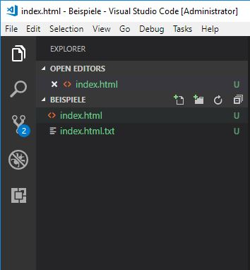

Internet
- Das Internet ist ein globales System aus miteinander verbundenen Computernetzwerken. Sobald zwei elektronische Geräte (z.B. Computer) verbunden sind und miteinander kommunizieren können, werden sie Teil eines Netzwerks.
- Eine IP-Adresse (Internet Protocol Adresse) ist eine aus Zahlen bestehende Adresse, die jedem mit dem Internet verbundenen Gerät zugewiesen wird.
- Hypertext Transfer Protocol (http) ist die Formatierungssprache. Die regeln für diese Sprache wurde von W3C (World Wide Web Consortium) erstellt. Das neuste Protokoll ist HTM5, welches kontinuierlich weiterentwickelt.
- Der DNS ist der Domain Namen. Wenn man den Domain Namen in Internet eingibt fragt es unsichtbar und automatisch die IP Adresse des Servers ab.
- Peer-to-Peer-Netzwerke bestehen aus Computern (Webserver oder Heim-PCs), die zugleich an einer bestimmten Form der Kommunikation teilnehmen. Das bedeutet Jeder Computer kann mit anderen Computer kommunizieren. Um noch mehr über das Internet zu erfahren klicken sie eins der Links an:
Die sendung mit der Maus: Wie das Internet Funktioniert
3sat Doku über das Internet
Entwicklungsumgebung
Es gibt verschiedenen Arten von Entwicklungsumgebungen. Ein einfaches Programm zur Entwicklung einer Webseite ist Visio Studio Code. Den Aufbau sehen sie im Bild unten.
